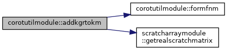
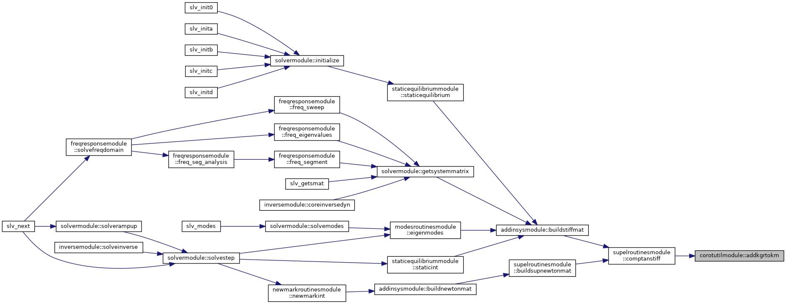
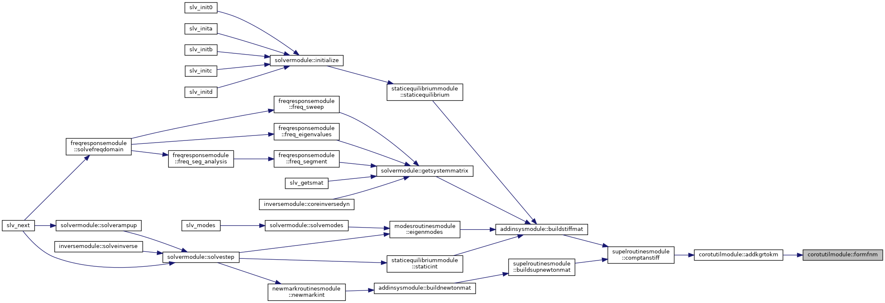
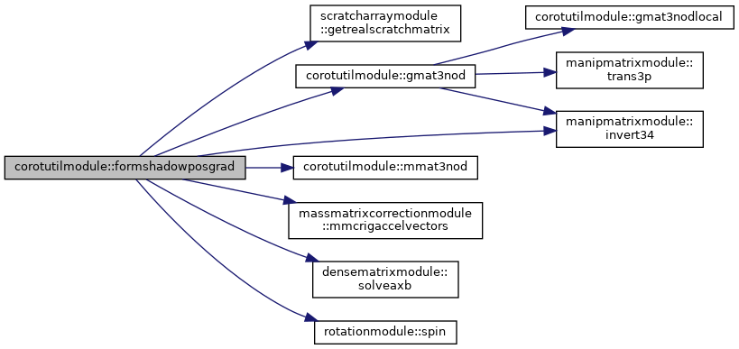
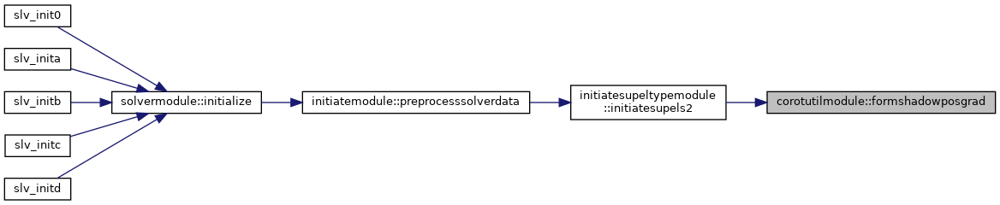
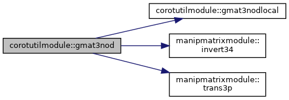
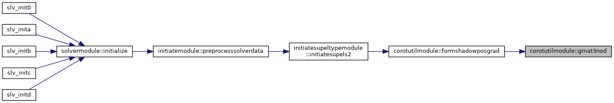
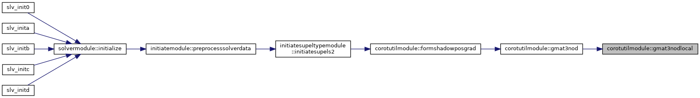
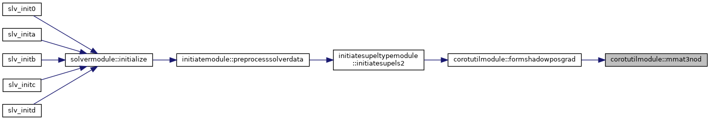

|
FEDEM Solver
R8.0
Source code of the dynamics solver
|
Module with subroutines for co-rotational superelement formulations. More...
Functions/Subroutines | |
| subroutine, public | addkgrtokm (supEl, ktan, km, fint, ierr) |
| Calculates the rotational geometric stiffness for a superelement. More... | |
| subroutine | gmat3nod (gmat, x, y, z, ierr) |
| Computes the rotation gradient matrix for a 3-noded element. More... | |
| subroutine | gmat3nodlocal (gmat, x, y) |
| Computes the rotation gradient matrix for a 3-noded element. More... | |
| subroutine | mmat3nod (mmat, emat) |
| Sets up an eccentricity transformation matrix for a 3-noded element. More... | |
| subroutine | formfnm (triads, fint, fnm) |
| Forms the Fn matrix based on the internal force vector. More... | |
| subroutine, public | formshadowposgrad (supEl, dbgCorot, ierr) |
| Forms the gradient matrix used in the shadow position calculations. More... | |
Module with subroutines for co-rotational superelement formulations.
| subroutine, public corotutilmodule::addkgrtokm | ( | type(supeltype), intent(in) | supEl, |
| real(dp), dimension(:,:), intent(out) | ktan, | ||
| real(dp), dimension(:,:), intent(in) | km, | ||
| real(dp), dimension(:), intent(in) | fint, | ||
| integer, intent(out) | ierr | ||
| ) |
Calculates the rotational geometric stiffness for a superelement.
| [in] | supEl | The superelement to calculation geometric stiffness for |
| [out] | ktan | Tangential stiffness matrix (material + geometric stiff.) |
| [in] | km | Material stiffness matrix |
| [in] | fint | Internal force vector |
| [out] | ierr | Error flag |


| subroutine corotutilmodule::formfnm | ( | type(triadptrtype), dimension(:), intent(in) | triads, |
| real(dp), dimension(:), intent(in) | fint, | ||
| real(dp), dimension(:,:), intent(out) | fnm | ||
| ) |
Forms the Fn matrix based on the internal force vector.
| [in] | triads | External nodes in the superelement |
| [in] | fint | Internal force vector of the superelement |
| [out] | fnm | Then Fn matrix (see below) |
The Fn matrix consists of the spin of the nodal force vectors with both axial and moment contributions, i.e.,
for each node ordered as columns.

| subroutine, public corotutilmodule::formshadowposgrad | ( | type(supeltype), intent(inout) | supEl, |
| integer, intent(in) | dbgCorot, | ||
| integer, intent(out) | ierr | ||
| ) |
Forms the gradient matrix used in the shadow position calculations.
| supEl | The superelement to calculate the gradient matrix for | |
| [in] | dbgCorot | File unit number of debug pring |
| [out] | ierr | Error flag |


| subroutine corotutilmodule::gmat3nod | ( | real(dp), dimension(3,3,3), intent(out) | gmat, |
| real(dp), dimension(3), intent(in) | x, | ||
| real(dp), dimension(3), intent(in) | y, | ||
| real(dp), dimension(3), intent(in) | z, | ||
| integer, intent(out) | ierr | ||
| ) |
Computes the rotation gradient matrix for a 3-noded element.
| [out] | gmat | The rotation gradients in local system |
| [in] | x | X-coordinates for the 3 nodes in global coordinate system |
| [in] | y | Y-coordinates for the 3 nodes in global coordinate system |
| [in] | z | Z-coordinates for the 3 nodes in global coordinate system |
| [out] | ierr | Error flag |


| subroutine corotutilmodule::gmat3nodlocal | ( | real(dp), dimension(3,9), intent(out) | gmat, |
| real(dp), dimension(3), intent(in) | x, | ||
| real(dp), dimension(3), intent(in) | y | ||
| ) |
Computes the rotation gradient matrix for a 3-noded element.
| [out] | gmat | The rotation gradients in local system |
| [in] | x | X-coordinates for the 3 nodes in local coordinate system |
| [in] | y | Y-coordinates for the 3 nodes in local coordinate system |
The element assumed in the xy-plane. The x-axis is not neccesarily along the side 1-2. The computed rotation gradient matrix gmat consists of rot_x,rot_y,rot_z in local system with respect to the local nodal degrees of freedom. The nodal DOF ordering for each node is assumed to be tx,ty,tz.

| subroutine corotutilmodule::mmat3nod | ( | real(dp), dimension(3,18), intent(out) | mmat, |
| real(dp), dimension(3,3), intent(in) | emat | ||
| ) |
Sets up an eccentricity transformation matrix for a 3-noded element.
| [out] | mmat | The eccentricity transformation matrix (translations only) |
| [in] | emat | Nodal eccentricities in local coordinates |
